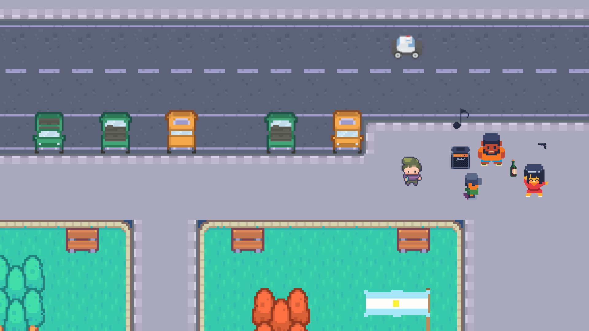
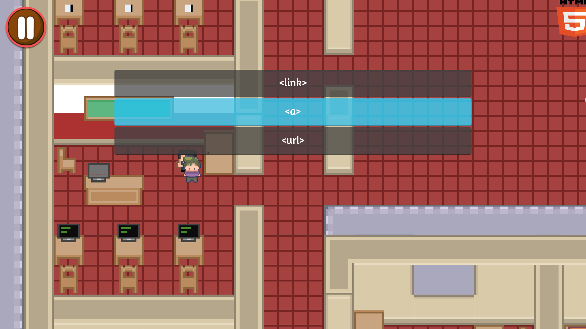
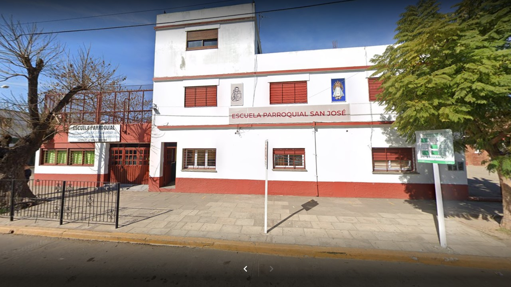
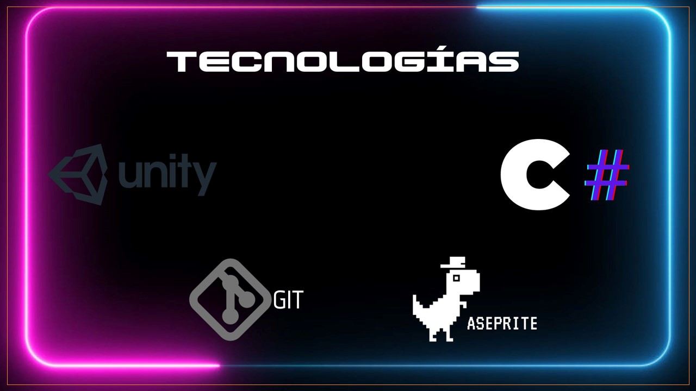

Galería Multimedia
Descubre el mundo de The Pupil a través de estas imágenes y videos
Mira el gameplay de The Pupil en acción

Exploración del mundo
Descubre lugares misteriosos y personajes interesantes

Desafíos educativos
Resuelve problemas y supera misiones académicas

Interfaz de usuario
Diseño intuitivo y fácil de usar

Imagen real del Instituto Superior
Instituto en el que fue inspirado el juego
